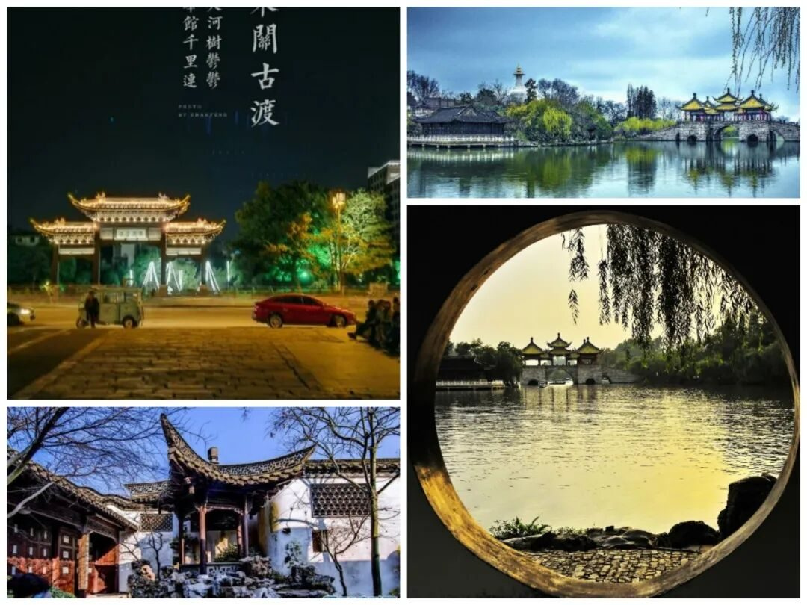
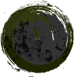
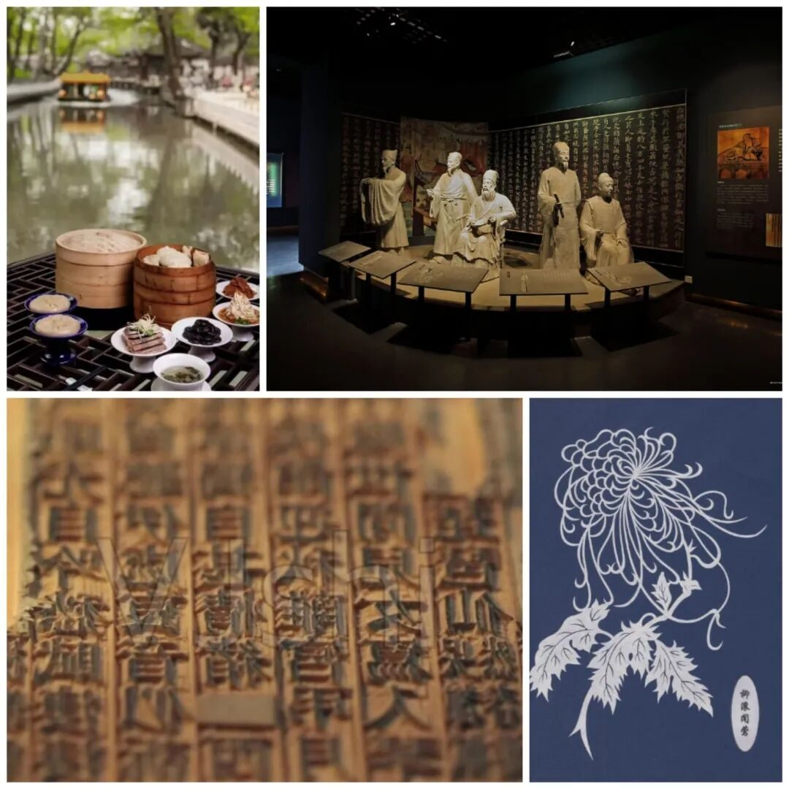

【徜扬恣肆·九】岁月不败，淮扬静好



行
淮扬静好
岁月不败
者
试问江南诸伴侣，谁似我，醉扬州。



1
【初见广陵】
扬州，古称广陵、江都，最早建城的历史在春秋时期。扬州的经济繁茂与其得天独厚的区位优势有关。扬州地处长江以北,淮河以南,西濒运河,东临大海方圆数百里内,河道纵横水陆交通便捷,是自隋朝开凿京杭大运河以来南漕北运船舶必经之咽喉。扬州因运河而生，也因运河而兴。在唐代扬州贏得了“东南第一商埠”的美誉。
杜牧有诗云：「街垂千步柳，霞映两重城。天碧台阁丽，风凉歌管清。」一诗书尽唐代扬州之繁华。
2
【文化之旅】
而扬州丰厚的文化底蕴、与众不同的饮食派系、独特的园林文化都依托于经济繁茂的沃土，实践过程中我们探访了扬州的非遗文化、美食文化、景观名胜、历史文化、运河文化，经过几天的了解，扬州这个神秘而美丽的城市，生动的展现在我的眼前。无论是扬州八怪、淮扬小吃，还是飞花剪纸、雕版印刷，他们都历经千百年岁月洗礼，文化似乎始终有一种能触及心灵的力量，它跨过千年光阴感动了无数先辈，又来到我们面前。

3
【不说再见】
扬州之行似乎既漫长又短暂，虽然每一位行者都收获颇丰，但很快就要同扬州告别，非常遗憾没能在现场更直观的感受扬州的魅力，但这座独特的城市，这段别样的经历，将永远藏在我的心里，我们不说再见。
运河的水千百年奔流不息
魅力华夏文明在岁月中静候我们
行者永远在路上
-THE END-
来源 | 行者无疆实践团
文字 | 胡心怡
编辑 | 杨静
审核 | 付媛 康艳虎